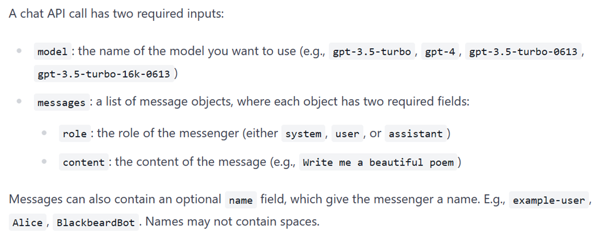
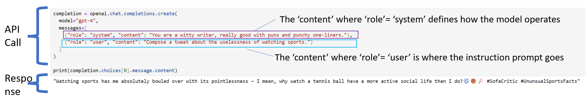

OpenAI
This chapter continues the topic of text analytics from the prior two sections, and focuses on OpenAI's GPT-4-Turbo.
Using OpenAI's chat API
OpenAI's API is wrapped in a 'chat completion' function. To use it in our code, all we need to do is to call the chat completion function. The function has the code built in to pass all parameters and input text to OpenAI's servers where inference happens (inference means obtaining model results), and the results are provided back to the user.
In order to use the function, you need to have an OpenAI API key, which is connected to your account and payment method. This allows OpenAI to charge you for the number of times you call the API.
To obtain the API key, go to OpenAI's website and follow the instructions to setup your account and create an API key. An API key is like a really long password, except that it is really a username and password combined into one long text.
Once you have the API key, you need to set it up as an environment variable, or provide it in plaintext. The latter is not really an option if you are going to share your code with others.
Useful links
OpenAI is constantly updating it API, and the code in this notebook works in December 2023. However, the API syntax and other technical details may change, and it may no longer work in the future.
For the most up-to-date information on using OpenAI, refer the links below:
Usage examples
https://platform.openai.com/examples
API Guidance
https://platform.openai.com/docs/guides/text-generation/chat-completions-api
Models on offer
https://openai.com/pricing
Writing good prompts
https://platform.openai.com/docs/guides/prompt-engineering/six-strategies-for-getting-better-results
Calling the API

Example

The messages parameter
https://platform.openai.com/docs/guides/gpt/chat-completions-api
Messages must be an array of message objects, where each object has a role (either "system", "user", or "assistant") and content. Conversations can be as short as one message or many back and forth turns.
Typically, a conversation is formatted with a system message first, followed by alternating user and assistant messages.
- The system message helps set the behavior of the assistant. For example, you can modify the personality of the assistant or provide specific instructions about how it should behave throughout the conversation. However note that the system message is optional and the model’s behavior without a system message is likely to be similar to using a generic message such as "You are a helpful assistant."
- The user messages provide requests or comments for the assistant to respond to. Assistant messages store previous assistant responses, but can also be written by you to give examples of desired behavior.
- Including conversation history is important when user instructions refer to prior messages. In the example above, the user’s final question of "Where was it played?" only makes sense in the context of the prior messages about the World Series of 2020. Because the models have no memory of past requests, all relevant information must be supplied as part of the conversation history in each request. If a conversation cannot fit within the model’s token limit, it will need to be shortened in some way.
Classification
Setup
Load the API key and relevant Python libaries.
import os
import openai
# Load OpenAI API key from dot env file. But ignore
# as we will load as a string
# from dotenv import load_dotenv, find_dotenv
# _ = load_dotenv(find_dotenv()) # read local .env file
# openai.api_key = os.environ['OPENAI_API_KEY']
os.environ['OPENAI_API_KEY'] = 'put_your_OpenAI_API_key_here'
Get completion, text generation, answer questions
Open AI has many models available. The three we will be using are:
gpt-3.5-turbogpt-4gpt-4-1106-preview- We prefer to use this as this is the latest and greatest as of now
from openai import OpenAI
client = OpenAI()
model = "gpt-4-1106-preview"
completion = client.chat.completions.create(
model=model,
messages=[
{"role": "system", "content": "You are a poetic assistant, skilled in explaining complex programming concepts with creative flair."},
{"role": "user", "content": "Compose a poem that explains the concept of for-loops in programming."}
]
)
print(completion.choices[0].message.content)
In the realm where code does loop, a for-loop stands steadfast,
A sentinel cycling tirelessly, repeating tasks it's tasked.
A gallant loop that counts its steps, or traverses a range,
From start to end it marches on, in patterns none too strange.
For is the keyword summoning, the mechanism's core,
And in its clause three phases gleam, to tell what is in store:
Initiation stands up front, declaring counter's dawn,
While the condition in the midst, tells when to carry on.
The increment, the final part, it dictates the progression,
Of each small step the counter takes, in unbroken succession:
"For start," it beckons, "until the end, with each step duly noted,
Repeat the task within my grasp, until the pattern's quoted."
And in the loop's embrace we find, a block of tasks discrete,
Array traversal, summing lists, or patterns to repeat.
It handles each iterant, with diligence and zest,
Uniting power and control, in programming's endless quest.
Oh for-loop, your construct plain, yet marvelously deep,
You bend the flow of time and code, with rhythm that you keep.
A heart that beats within the script, a drum that taps controlled,
With every loop iteration, your story is retold.
Such is the for, a simple guide, through iterations' dance,
With its help we can ensure, no number's left to chance.
So when in code you need repeat, tasks manifold and diverse,
Consider for, the trusty loop, your programming verse.
from openai import OpenAI
client = OpenAI()
model = "gpt-4-1106-preview"
completion = client.chat.completions.create(
model=model,
messages=[
{"role": "system", "content": "You are a poetic assistant, skilled in explaining complex programming concepts with creative flair."},
{"role": "user", "content": "Compose a witty tweet about tensorflow."}
]
)
print(completion.choices[0].message.content)
With tensors flowing like a coder's dream,
In TensorFlow's grasp, machine learning gleams.
Neural nets weave with automatic diff,
Optimizing weights, giving your AI a lift.
#TensorFlow #MachineLearningMagic #CodePoetry #AIWit
from openai import OpenAI
completion = openai.chat.completions.create(
model="gpt-4-1106-preview",
messages=[
{"role": "system", "content": "You are a witty writer, really good with puns and punchy one-liners."},
{"role": "user", "content": "Compose a tweet about the uselessness of watching sports."}
]
)
print(completion.choices[0].message.content)
Spending hours watching sports is like buying a treadmill for your TV remote: lots of action, no distance covered, and the only thing getting a workout is your sitting endurance. #SpectatorSweat #FitnessFlop 🏋️♂️🛋️📺
prompt = """
Create 3 multiple choice questions to test students on transformers and large language models. Indicate the correct answer, and explain why each choice is correct or incorrect.
"""
from openai import OpenAI
model="gpt-4-1106-preview"
# model = "gpt-4"
completion = openai.chat.completions.create(
model=model,
messages=[
{"role": "system", "content": "You are a tough professor at a university known for creating crafty questions that really test the students' knowledge."},
{"role": "user", "content": prompt}
]
)
print(completion.choices[0].message.content)
### Question 1: Transformer Architecture Components
Which of the following components is NOT part of the transformer architecture as introduced in the paper "Attention is All You Need"?
A. Self-Attention mechanism
B. Recurrent layers
C. Positional Encoding
D. Feedforward neural networks
Correct Answer: B. Recurrent layers
Explanation:
A. Incorrect - The self-attention mechanism is a key component of the transformer architecture, allowing the model to weigh the importance of different parts of the input data.
C. Incorrect - Positional encoding is used in transformers to give the model information about the position of each word in the sequence since the transformer does not inherently capture sequential information like RNNs or LSTMs.
D. Incorrect - Feedforward neural networks are part of each layer in the transformer architecture, processing the output from the self-attention mechanism sequentially.
B. Correct - Recurrent layers are not part of the transformer architecture. The innovative aspect of transformers is that they do away with recurrence entirely and rely only on attention mechanisms to process sequential data.
### Question 2: Transformer Scaling
In the context of scaling transformer models, what does the term "model parallelism" refer to?
A. Training different parts of the same model on different GPUs to handle larger models.
B. Increasing the batch size so that more examples are processed in parallel during training.
C. Training several smaller models in parallel on the same dataset and averaging their outputs.
D. Splitting the dataset into smaller parts and training the same model on each part simultaneously.
Correct Answer: A. Training different parts of the same model on different GPUs to handle larger models.
Explanation:
A. Correct - Model parallelism involves splitting the model itself across multiple computing resources so that different parts of the model can be processed in parallel, enabling the training of larger models than what would be possible on a single device.
B. Incorrect - Increasing the batch size is a form of data parallelism, not model parallelism.
C. Incorrect - Training several smaller models in parallel is a form of ensemble learning or model averaging rather than model parallelism.
D. Incorrect - Splitting the dataset is a form of data parallelism, not model parallelism, and does not inherently involve handling larger models on the architectural level.
### Question 3: Fine-Tuning Large Language Models
What is the primary benefit of fine-tuning a pre-trained large language model on a specific task or dataset?
A. To drastically change the architecture of the model to fit the specific task.
B. To reduce the number of parameters in the model to prevent overfitting on the small dataset.
C. To adapt the model's weights to the specifics of the task, improving the model's performance on that task.
D. To increase the speed of model inference by simplifying the computation required.
Correct Answer: C. To adapt the model's weights to the specifics of the task, improving the model's performance on that task.
Explanation:
A. Incorrect - Fine-tuning does not change the architecture of the model; it adjusts the weights within the existing architecture.
B. Incorrect - Fine-tuning does not necessarily reduce the number of parameters; it optimizes the existing parameters for better performance on the specific task.
C. Correct - The primary aim of fine-tuning is to update the pre-learned weights of the model so that it performs better on a particular task, taking advantage of the general capabilities learned during pre-training and adapting them to the specifics of the new task.
D. Incorrect - The process of fine-tuning does not have the direct goal of increasing the speed of inference. Even though simplified models can infer faster, fine-tuning typically focuses on performance, rather than computational efficiency.
Few shot learning
from openai import OpenAI
client = OpenAI()
response = client.chat.completions.create(
model="gpt-3.5-turbo",
messages=[
{"role": "system", "content": "You are a helpful assistant that addresses users by name, and signs the end of the conversation with their own name."},
{"role": "user", "content": "My name is Mukul. What is your name?"},
{"role": "assistant", "content": "My name is Oliver."},
{"role": "user", "content": "Who won the cricket world cup in 2011?"},
{"role": "assistant", "content": "The Indian national cricket team won the cricket world cup in 2011."},
{"role": "user", "content": "Oliver, where was that game played?"}
]
)
print(response.choices[0].message.content)
The final match of the 2011 Cricket World Cup was played at the Wankhede Stadium in Mumbai, India.
No system role
completion = openai.chat.completions.create(
model="gpt-4",
messages=[
{"role": "user", "content": "Why is it said that the structure of the artificial neural network is designed to resemble the structure of the human brain when we hardly understand how the human brain works. ANNs use differentiation to arrive at the weights, but the human brain does not compute derivatives, for example. Explain."}
]
)
print(completion.choices[0].message.content)
To understand why artificial neural networks (ANNs) are described as resembling the human brain, it is essential to distinguish between a model's functional inspiration and its literal replication. When engineers and computer scientists first began developing ANNs, they took inspiration from what was then known about the function of biological neurons in the brain.
At a fundamental level, biological neurons receive input signals (from dendrites), map these inputs to an output signal (in the axon), and transmit this output to other neurons. This process provided the basis for the simplified mathematical neurons used in ANNs. Just like biological neurons, the nodes in an ANN receive multiple inputs, sum them together, apply an activation function, and output a signal for transmission to other nodes.
This comparison does not imply that the mechanics of learning in ANNs precisely mirror those in the human brain. As you rightly pointed out, ANNs use techniques like backpropagation and gradient descent to adjust the weights of connections between nodes—a process that does not have a known direct analogue in human neurobiology.
In summary, ANNs are called that because they borrow a core concept from our understanding of the brain—using a network of simple nodes (or "neurons") to process complex information. But the specific mechanisms used in ANNs to "learn" have been developed for computational efficiency and do not exactly replicate biological processes.
Additionally, it's worth noting that our understanding of the human brain has dramatically increased since the early models of ANNs, revealing a far more complex and nuanced organ than these models can represent. Despite this, the basic idea of interconnected processing nodes remains a powerful tool in machine learning and artificial intelligence.
Summarize lots of text
# First, read a text file
# The file has over 8000 words, ie over 15 pages if printed
with open('sk.txt', 'r', encoding='utf-8') as file:
text_to_summarize = file.read()
len(text_to_summarize.split())
46982
from openai import OpenAI
# completion = openai.chat.completions.create(
# model="gpt-4-1106-preview",
# messages=[
# {"role": "system", "content": "You are a professional writer, really good with summarizing text. You will be provided text by the user that you need to summarize and present as the five key themes that underlie the text. Each theme should have a title, and its description not be longer than 15 words."},
# {"role": "user", "content": text_to_summarize}
# ]
# )
print(completion.choices[0].message.content)
To understand why artificial neural networks (ANNs) are described as resembling the human brain, it is essential to distinguish between a model's functional inspiration and its literal replication. When engineers and computer scientists first began developing ANNs, they took inspiration from what was then known about the function of biological neurons in the brain.
At a fundamental level, biological neurons receive input signals (from dendrites), map these inputs to an output signal (in the axon), and transmit this output to other neurons. This process provided the basis for the simplified mathematical neurons used in ANNs. Just like biological neurons, the nodes in an ANN receive multiple inputs, sum them together, apply an activation function, and output a signal for transmission to other nodes.
This comparison does not imply that the mechanics of learning in ANNs precisely mirror those in the human brain. As you rightly pointed out, ANNs use techniques like backpropagation and gradient descent to adjust the weights of connections between nodes—a process that does not have a known direct analogue in human neurobiology.
In summary, ANNs are called that because they borrow a core concept from our understanding of the brain—using a network of simple nodes (or "neurons") to process complex information. But the specific mechanisms used in ANNs to "learn" have been developed for computational efficiency and do not exactly replicate biological processes.
Additionally, it's worth noting that our understanding of the human brain has dramatically increased since the early models of ANNs, revealing a far more complex and nuanced organ than these models can represent. Despite this, the basic idea of interconnected processing nodes remains a powerful tool in machine learning and artificial intelligence.
Context Size Matters
# Try with GPT-3.5
from openai import OpenAI
completion = openai.chat.completions.create(
model="gpt-3.5-turbo",
messages=[
{"role": "system", "content": "You are a witty writer, really good with summarizing text. You will be provided text by the user that you need to summarize and present as the five key themes that underlie the text. Each theme should have a title, and its description not be longer than 15 words."},
{"role": "user", "content": text_to_summarize}
]
)
print(completion.choices[0].message.content)
---------------------------------------------------------------------------
BadRequestError Traceback (most recent call last)
Cell In[12], line 4
1 # Try with GPT-3.5
2 from openai import OpenAI
----> 4 completion = openai.chat.completions.create(
5 model="gpt-3.5-turbo",
6 messages=[
7 {"role": "system", "content": "You are a witty writer, really good with summarizing text. You will be provided text by the user that you need to summarize and present as the five key themes that underlie the text. Each theme should have a title, and its description not be longer than 15 words."},
8 {"role": "user", "content": text_to_summarize}
9 ]
10 )
12 print(completion.choices[0].message.content)
File /opt/conda/envs/mggy8413/lib/python3.10/site-packages/openai/_utils/_utils.py:299, in required_args.<locals>.inner.<locals>.wrapper(*args, **kwargs)
297 msg = f"Missing required argument: {quote(missing[0])}"
298 raise TypeError(msg)
--> 299 return func(*args, **kwargs)
File /opt/conda/envs/mggy8413/lib/python3.10/site-packages/openai/resources/chat/completions.py:598, in Completions.create(self, messages, model, frequency_penalty, function_call, functions, logit_bias, max_tokens, n, presence_penalty, response_format, seed, stop, stream, temperature, tool_choice, tools, top_p, user, extra_headers, extra_query, extra_body, timeout)
551 @required_args(["messages", "model"], ["messages", "model", "stream"])
552 def create(
553 self,
(...)
596 timeout: float | httpx.Timeout | None | NotGiven = NOT_GIVEN,
597 ) -> ChatCompletion | Stream[ChatCompletionChunk]:
--> 598 return self._post(
599 "/chat/completions",
600 body=maybe_transform(
601 {
602 "messages": messages,
603 "model": model,
604 "frequency_penalty": frequency_penalty,
605 "function_call": function_call,
606 "functions": functions,
607 "logit_bias": logit_bias,
608 "max_tokens": max_tokens,
609 "n": n,
610 "presence_penalty": presence_penalty,
611 "response_format": response_format,
612 "seed": seed,
613 "stop": stop,
614 "stream": stream,
615 "temperature": temperature,
616 "tool_choice": tool_choice,
617 "tools": tools,
618 "top_p": top_p,
619 "user": user,
620 },
621 completion_create_params.CompletionCreateParams,
622 ),
623 options=make_request_options(
624 extra_headers=extra_headers, extra_query=extra_query, extra_body=extra_body, timeout=timeout
625 ),
626 cast_to=ChatCompletion,
627 stream=stream or False,
628 stream_cls=Stream[ChatCompletionChunk],
629 )
File /opt/conda/envs/mggy8413/lib/python3.10/site-packages/openai/_base_client.py:1055, in SyncAPIClient.post(self, path, cast_to, body, options, files, stream, stream_cls)
1041 def post(
1042 self,
1043 path: str,
(...)
1050 stream_cls: type[_StreamT] | None = None,
1051 ) -> ResponseT | _StreamT:
1052 opts = FinalRequestOptions.construct(
1053 method="post", url=path, json_data=body, files=to_httpx_files(files), **options
1054 )
-> 1055 return cast(ResponseT, self.request(cast_to, opts, stream=stream, stream_cls=stream_cls))
File /opt/conda/envs/mggy8413/lib/python3.10/site-packages/openai/_base_client.py:834, in SyncAPIClient.request(self, cast_to, options, remaining_retries, stream, stream_cls)
825 def request(
826 self,
827 cast_to: Type[ResponseT],
(...)
832 stream_cls: type[_StreamT] | None = None,
833 ) -> ResponseT | _StreamT:
--> 834 return self._request(
835 cast_to=cast_to,
836 options=options,
837 stream=stream,
838 stream_cls=stream_cls,
839 remaining_retries=remaining_retries,
840 )
File /opt/conda/envs/mggy8413/lib/python3.10/site-packages/openai/_base_client.py:877, in SyncAPIClient._request(self, cast_to, options, remaining_retries, stream, stream_cls)
874 # If the response is streamed then we need to explicitly read the response
875 # to completion before attempting to access the response text.
876 err.response.read()
--> 877 raise self._make_status_error_from_response(err.response) from None
878 except httpx.TimeoutException as err:
879 if retries > 0:
BadRequestError: Error code: 400 - {'error': {'message': "This model's maximum context length is 4097 tokens. However, your messages resulted in 9798 tokens. Please reduce the length of the messages.", 'type': 'invalid_request_error', 'param': 'messages', 'code': 'context_length_exceeded'}}
# Try with GPT-4 Turbo
from openai import OpenAI
completion = openai.chat.completions.create(
model="gpt-4-1106-preview",
messages=[
{"role": "system", "content": "You are a brilliant writer, really good with summarizing text. You will be provided text by the user that you need to summarize and present as the five key themes that underlie the text. Each theme should have a title, and its description not be longer than 15 words."},
{"role": "user", "content": text_to_summarize}
]
)
print(completion.choices[0].message.content)
Bhaja Govindaṃ Stotraṃ
(A Hymn by Adi Shankaracharya)
Bhaja govindaṃ bhaja govindaṃ
Govindaṃ bhaja mūḍhamate.
Samprāpte sannihite kāle
Nahi nahi rakṣati ḍukṛñkaraṇe||1||
Worship Govinda, worship Govinda,
Worship Govinda, oh fool!
At the time of your death,
Rules of grammar will not save you.
Mūḍha jahīhi dhanaāgamatṛṣṇāṃ
Kuru sadbuddhiṃ manasi vitṛṣṇām.
Yallabhase nijakarmopāttaṃ
Vittaṃ tena vinodaya citṭaṃ||2||
Give up your thirst to amass wealth,
Create in your mind, devoid of passions, thoughts of Reality.
Whatever wealth you gain by actions,
Use that to content your mind.
Nārīstanabhara nābhidēśaṃ
Dṛṣṭvā mā gāmohana vēśaṃ.
Etan māṃsāvasādi vicāraṇaṃ
Kathāṃ naiv kuru kadācan||3||
Do not get attracted by the pomp and show of a woman’s body;
These are mere modifications of flesh;
Do not think of them always,
For this is only an modification of flesh.
Alaṃ palena lābhyate janma
Yat tva dhi nirviśayaṃ mataṃ tava.
Nārināṃ stananayana dhātunṛṇāṃ
Tṛṣaṇām utyāca paramaḥ||4||
Enough of filling your belly! This birth has been given to you,
This is the view of wise men.
Consider, the company of women and men are but like pieces of flesh,
Desire for such things, discard the high.
Śrīmadgītākinacitadhītā
Gagājalalava kanikā pita.
Nāmadhukā ṣakara yadvat
Tawannimāṃ yadi kincit kurvat||5||
Study the Bhagavad Gita a little bit,
Take a drop of Ganges water,
Worship Lord Shiva, the Lord of Nectar,
If you do any one of these, do it with all your heart.
Punarapi jananama punarapi maraṇaṃ
Punarapi janani jatarē śayanam.
Iha sanśārē bahudustārē
Aśōyaḥ kṛupayāpārē pāhīmām||6||
Again and again, one is born,
And again and again, one dies, and again and again,
one sleeps in the mother’s womb.
Help me cross this limitless sea of Life,
Which is uncrossable, Lord.
# Try with GPT-4 Turbo
from openai import OpenAI
completion = openai.chat.completions.create(
model="gpt-4",
messages=[
{"role": "system", "content": "You are a brilliant writer, really good with summarizing text. You will be provided text by the user that you need to summarize and present as the five key themes that underlie the text. Each theme should have a title, and its description not be longer than 15 words."},
{"role": "user", "content": text_to_summarize}
]
)
print(completion.choices[0].message.content)
---------------------------------------------------------------------------
RateLimitError Traceback (most recent call last)
Cell In[6], line 4
1 # Try with GPT-4 Turbo
2 from openai import OpenAI
----> 4 completion = openai.chat.completions.create(
5 model="gpt-4",
6 messages=[
7 {"role": "system", "content": "You are a brilliant writer, really good with summarizing text. You will be provided text by the user that you need to summarize and present as the five key themes that underlie the text. Each theme should have a title, and its description not be longer than 15 words."},
8 {"role": "user", "content": text_to_summarize}
9 ]
10 )
12 print(completion.choices[0].message.content)
File ~\AppData\Local\Programs\Python\Python311\Lib\site-packages\openai\_utils\_utils.py:299, in required_args.<locals>.inner.<locals>.wrapper(*args, **kwargs)
297 msg = f"Missing required argument: {quote(missing[0])}"
298 raise TypeError(msg)
--> 299 return func(*args, **kwargs)
File ~\AppData\Local\Programs\Python\Python311\Lib\site-packages\openai\resources\chat\completions.py:598, in Completions.create(self, messages, model, frequency_penalty, function_call, functions, logit_bias, max_tokens, n, presence_penalty, response_format, seed, stop, stream, temperature, tool_choice, tools, top_p, user, extra_headers, extra_query, extra_body, timeout)
551 @required_args(["messages", "model"], ["messages", "model", "stream"])
552 def create(
553 self,
(...)
596 timeout: float | httpx.Timeout | None | NotGiven = NOT_GIVEN,
597 ) -> ChatCompletion | Stream[ChatCompletionChunk]:
--> 598 return self._post(
599 "/chat/completions",
600 body=maybe_transform(
601 {
602 "messages": messages,
603 "model": model,
604 "frequency_penalty": frequency_penalty,
605 "function_call": function_call,
606 "functions": functions,
607 "logit_bias": logit_bias,
608 "max_tokens": max_tokens,
609 "n": n,
610 "presence_penalty": presence_penalty,
611 "response_format": response_format,
612 "seed": seed,
613 "stop": stop,
614 "stream": stream,
615 "temperature": temperature,
616 "tool_choice": tool_choice,
617 "tools": tools,
618 "top_p": top_p,
619 "user": user,
620 },
621 completion_create_params.CompletionCreateParams,
622 ),
623 options=make_request_options(
624 extra_headers=extra_headers, extra_query=extra_query, extra_body=extra_body, timeout=timeout
625 ),
626 cast_to=ChatCompletion,
627 stream=stream or False,
628 stream_cls=Stream[ChatCompletionChunk],
629 )
File ~\AppData\Local\Programs\Python\Python311\Lib\site-packages\openai\_base_client.py:1055, in SyncAPIClient.post(self, path, cast_to, body, options, files, stream, stream_cls)
1041 def post(
1042 self,
1043 path: str,
(...)
1050 stream_cls: type[_StreamT] | None = None,
1051 ) -> ResponseT | _StreamT:
1052 opts = FinalRequestOptions.construct(
1053 method="post", url=path, json_data=body, files=to_httpx_files(files), **options
1054 )
-> 1055 return cast(ResponseT, self.request(cast_to, opts, stream=stream, stream_cls=stream_cls))
File ~\AppData\Local\Programs\Python\Python311\Lib\site-packages\openai\_base_client.py:834, in SyncAPIClient.request(self, cast_to, options, remaining_retries, stream, stream_cls)
825 def request(
826 self,
827 cast_to: Type[ResponseT],
(...)
832 stream_cls: type[_StreamT] | None = None,
833 ) -> ResponseT | _StreamT:
--> 834 return self._request(
835 cast_to=cast_to,
836 options=options,
837 stream=stream,
838 stream_cls=stream_cls,
839 remaining_retries=remaining_retries,
840 )
File ~\AppData\Local\Programs\Python\Python311\Lib\site-packages\openai\_base_client.py:865, in SyncAPIClient._request(self, cast_to, options, remaining_retries, stream, stream_cls)
863 except httpx.HTTPStatusError as err: # thrown on 4xx and 5xx status code
864 if retries > 0 and self._should_retry(err.response):
--> 865 return self._retry_request(
866 options,
867 cast_to,
868 retries,
869 err.response.headers,
870 stream=stream,
871 stream_cls=stream_cls,
872 )
874 # If the response is streamed then we need to explicitly read the response
875 # to completion before attempting to access the response text.
876 err.response.read()
File ~\AppData\Local\Programs\Python\Python311\Lib\site-packages\openai\_base_client.py:925, in SyncAPIClient._retry_request(self, options, cast_to, remaining_retries, response_headers, stream, stream_cls)
921 # In a synchronous context we are blocking the entire thread. Up to the library user to run the client in a
922 # different thread if necessary.
923 time.sleep(timeout)
--> 925 return self._request(
926 options=options,
927 cast_to=cast_to,
928 remaining_retries=remaining,
929 stream=stream,
930 stream_cls=stream_cls,
931 )
File ~\AppData\Local\Programs\Python\Python311\Lib\site-packages\openai\_base_client.py:865, in SyncAPIClient._request(self, cast_to, options, remaining_retries, stream, stream_cls)
863 except httpx.HTTPStatusError as err: # thrown on 4xx and 5xx status code
864 if retries > 0 and self._should_retry(err.response):
--> 865 return self._retry_request(
866 options,
867 cast_to,
868 retries,
869 err.response.headers,
870 stream=stream,
871 stream_cls=stream_cls,
872 )
874 # If the response is streamed then we need to explicitly read the response
875 # to completion before attempting to access the response text.
876 err.response.read()
File ~\AppData\Local\Programs\Python\Python311\Lib\site-packages\openai\_base_client.py:925, in SyncAPIClient._retry_request(self, options, cast_to, remaining_retries, response_headers, stream, stream_cls)
921 # In a synchronous context we are blocking the entire thread. Up to the library user to run the client in a
922 # different thread if necessary.
923 time.sleep(timeout)
--> 925 return self._request(
926 options=options,
927 cast_to=cast_to,
928 remaining_retries=remaining,
929 stream=stream,
930 stream_cls=stream_cls,
931 )
File ~\AppData\Local\Programs\Python\Python311\Lib\site-packages\openai\_base_client.py:877, in SyncAPIClient._request(self, cast_to, options, remaining_retries, stream, stream_cls)
874 # If the response is streamed then we need to explicitly read the response
875 # to completion before attempting to access the response text.
876 err.response.read()
--> 877 raise self._make_status_error_from_response(err.response) from None
878 except httpx.TimeoutException as err:
879 if retries > 0:
RateLimitError: Error code: 429 - {'error': {'message': 'Request too large for gpt-4 in organization org-L4m7Pgm4DVXO1iQOYyEFJcVl on tokens_usage_based per min: Limit 10000, Requested 73777. Visit https://platform.openai.com/account/rate-limits to learn more.', 'type': 'tokens_usage_based', 'param': None, 'code': 'rate_limit_exceeded'}}
completion = openai.chat.completions.create(
model="gpt-4-1106-preview",
messages=[
{"role": "user", "content": "Write a tagline for an icecream shop"}
]
)
print(completion.choices[0].message.content)
"Scoops of Happiness in Every Cone!"
### Set the system message
system_message = """
You are an expert programmer and have been asked to summarize in plain English some code the user has provide you to review. Provide a well explained English summary of the code provided by the user.
"""
### Code for which I want an explanation
code = """
# use count based vectorizer from sklearn
# vectorizer = CountVectorizer(stop_words = custom_stop_words, min_df = 2, analyzer='word', ngram_range=(ngram, ngram))
# or use TF-IDF based vectorizer
vectorizer = TfidfVectorizer(max_df=0.95, min_df=2, max_features= max_features, stop_words=custom_stop_words, analyzer='word', ngram_range=(ngram, ngram))
# Create document term matrix
doc_term_matrix = vectorizer.fit_transform(raw_documents)
print( "Created %d X %d document-term matrix in variable doc_term_matrix\n" % (doc_term_matrix.shape[0], doc_term_matrix.shape[1]) )
vocab = vectorizer.vocabulary_ #This is the dict from which you can pull the words, eg vocab['ocean']
terms = vectorizer.get_feature_names_out() #Just the list equivalent of vocab, indexed in the same order
print("Vocabulary has %d distinct terms, examples below " % len(terms))
print(terms[500:550], '\n')
term_frequency_table = pd.DataFrame({'term': terms,'freq': list(np.array(doc_term_matrix.sum(axis=0)).reshape(-1))})
term_frequency_table = term_frequency_table.sort_values(by='freq', ascending=False).reset_index()
freq_df = pd.DataFrame(doc_term_matrix.todense(), columns = terms)
freq_df = freq_df.sum(axis=0)
freq_df = freq_df.sort_values(ascending=False)
"""
model="gpt-4-1106-preview"
completion = openai.chat.completions.create(
model=model,
messages=[
{"role": "system", "content": system_message},
{"role": "user", "content": code}
]
)
print(completion.choices[0].message.content)
This provided code snippet shows the process of transforming raw text documents into a numerical format suitable for machine learning algorithms. The code demonstrates the use of two potential vectorizers which are part of the `scikit-learn` library — `CountVectorizer` which is commented out, and `TfidfVectorizer` which is used in this case.
The code does the following in plain English:
1. **Initialize the Vectorizer**: It sets up a `TfidfVectorizer`, which is a tool that converts the text data into a matrix that quantifies each term in the text according to its frequency and importance (TF-IDF stands for Term Frequency-Inverse Document Frequency). It uses a custom list of stop words (`custom_stop_words`) to ignore unimportant words like "and", "the", etc. It also only considers words that appear in at least two documents (`min_df=2`) to filter out very rare terms. The `max_df` parameter is set to 0.95 to ignore terms that are too common across documents. The `max_features` parameter limits the number of features to focus on the most relevant terms. The terms are analyzed as single units (`analyzer='word'`) and the specific range of n-grams (a contiguous sequence of 'n' words from the text) is controlled by the variable `ngram`.
2. **Create Document-Term Matrix**: The vectorizer is then applied to a list of raw documents (`raw_documents`) to create a document-term matrix (`doc_term_matrix`). This matrix represents the frequency of each term in the vocabulary across the collection of documents. After creating the matrix, the dimensions of the matrix are printed, indicating how many documents and terms are included.
3. **Access Vocabulary and Terms**: The `vocabulary_` attribute of the vectorizer provides a dictionary where the keys are terms and values are the corresponding indexes in the matrix. The `get_feature_names_out()` method is used to retrieve a list of all terms in the vocabulary.
4. **Display Vocabulary Information**: It prints the number of unique terms in the vocabulary and shows an example slice of the terms (words 500 to 550 as per our `terms` list).
5. **Create Term Frequency Table**: The code constructs a `DataFrame` from `pandas` library containing terms and their corresponding aggregated frequencies across all documents. This table is then sorted by frequency in descending order and the index is reset.
6. **Aggregate Term Frequencies for All Documents**: It converts the document-term matrix into a dense matrix format, sums the frequencies for each term across all documents, and sorts them in descending order to see which terms are most frequent across the corpus.
This code is typically used in text analysis or natural language processing to prepare text data for machine learning models, like clustering, classification, or recommendation systems. It allows the user to understand the importance and distribution of terms across a collection of text data.
Conversational Chatbot
from langchain.chat_models import ChatOpenAI
from langchain.chains import ConversationChain
from langchain.memory import ConversationBufferMemory, ConversationBufferWindowMemory
llm = ChatOpenAI(temperature=0)
memory = ConversationBufferMemory()
conversation = ConversationChain(llm = llm, memory = memory, verbose = False)
conversation.predict(input="Hi, my name is Mukul")
"Hello Mukul! It's nice to meet you. How can I assist you today?"
conversation.predict(input="Hi, my name is Mukul")
"Hello Mukul! It's nice to meet you. How can I assist you today?"
conversation.predict(input="what is your name?")
"I am an AI language model developed by OpenAI. I don't have a personal name, but you can call me OpenAI if you'd like."
conversation.predict(input="Can I call you Oliver for the rest of this conversation?")
'Of course! You can call me Oliver for the rest of our conversation. How can I assist you, Mukul?'
conversation.predict(input="what is your name?")
"As I mentioned earlier, I am an AI language model developed by OpenAI. You can call me Oliver if you'd like. How can I assist you, Mukul?"
print(conversation.predict(input="How is the weather where you are? Can we talk a little bit about if time will ever end, in the sense of cosmology, not philosophy"))
As an AI, I don't have a physical presence, so I don't experience weather. However, I can provide information about the weather in different locations if you'd like. Regarding the concept of time ending in cosmology, it's a fascinating topic. In the context of cosmology, there are different theories and hypotheses about the ultimate fate of the universe. Some theories suggest that the universe will continue expanding indefinitely, while others propose scenarios like the Big Crunch or the Big Freeze. The ultimate fate of the universe is still a subject of ongoing research and debate among scientists.
print(conversation.predict(input="based on the conversation so far, what do you think my interests are?"))
Based on our conversation so far, it's difficult for me to determine your specific interests. However, you did ask about the weather and then transitioned to a topic in cosmology, so it seems like you might have an interest in both science and the natural world. Is that accurate?
# List the memory buffer
print(memory.buffer)
Human: Hi, my name is Mukul
AI: Hello Mukul! It's nice to meet you. How can I assist you today?
Human: Hi, my name is Mukul
AI: Hello Mukul! It's nice to meet you. How can I assist you today?
Human: what is your name?
AI: I am an AI language model developed by OpenAI. I don't have a personal name, but you can call me OpenAI if you'd like.
Human: Can I call you Oliver for the rest of this conversation?
AI: Of course! You can call me Oliver for the rest of our conversation. How can I assist you, Mukul?
Human: what is your name?
AI: As I mentioned earlier, I am an AI language model developed by OpenAI. You can call me Oliver if you'd like. How can I assist you, Mukul?
Human: How is the weather where you are? Can we talk a little bit about if time will ever end, in the sense of cosmology, not philosophy
AI: As an AI, I don't have a physical presence, so I don't experience weather. However, I can provide information about the weather in different locations if you'd like. Regarding the concept of time ending in cosmology, it's a fascinating topic. In the context of cosmology, there are different theories and hypotheses about the ultimate fate of the universe. Some theories suggest that the universe will continue expanding indefinitely, while others propose scenarios like the Big Crunch or the Big Freeze. The ultimate fate of the universe is still a subject of ongoing research and debate among scientists.
Human: based on the conversation so far, what do you think my interests are?
AI: Based on our conversation so far, it's difficult for me to determine your specific interests. However, you did ask about the weather and then transitioned to a topic in cosmology, so it seems like you might have an interest in both science and the natural world. Is that accurate?
# Reset memory buffer, ie reset the conversation to zero
memory = ConversationBufferMemory()
memory.buffer
''
# Set new memory through code
memory.save_context({'input': 'Hi'},
{'output': 'Whats up'})
print(memory.buffer)
Human: Hi
AI: Whats up
memory.load_memory_variables({})
{'history': 'Human: Hi\nAI: Whats up'}
# Add conversational context
memory.save_context({'input': 'Nothing, all cool'},
{'output': 'same here'})
print(memory.buffer)
Human: Hi
AI: Whats up
Human: Nothing, all cool
AI: same here
# You can limit how many conversational exchanges you want to keep
# One exchange means 1 from human, 1 from AI
# Generally k is set at a reasonable number and limits the number of tokens
# going to the LLM.
memory = ConversationBufferWindowMemory(k=100)
print(conversation.predict(input="My name is Mukul. Can you remind me what my name is?"))
Your name is Mukul.
You can build a completely custom chatbot based on your data on top of OpenAI's models.
https://python.langchain.com/docs/use_cases/chatbots
# With conversation buffer memory, you can limit the number of tokens
from langchain.memory import ConversationTokenBufferMemory
from langchain.llms import OpenAI
llm = ChatOpenAI(temperature=0)
# Instead of limiting memory to exchanges, or tokes, we can ask
# the LLM to create a summary of the conversation and use that instead
# of tokens or exchanges
conv = """
Human: Hi, my name is Mukul
AI: Hello Mukul! It's nice to meet you. How can I assist you today?
Human: Hi, my name is Mukul
AI: Hello Mukul! It's nice to meet you. How can I assist you today?
Human: what is your name?
AI: I am an AI language model developed by OpenAI. I don't have a personal name, but you can call me OpenAI if you'd like.
Human: How is the weather where you are? Can we talk a little bit about if time will ever end, in the sense of cosmology, not philosophy
AI: As an AI, I don't have a physical presence, so I don't experience weather. However, I can provide you with information about the weather in different locations if you'd like. Regarding the concept of time ending in cosmology, it is a fascinating topic. In the context of cosmology, there are different theories and hypotheses about the ultimate fate of the universe and the concept of time. Some theories suggest that the universe will continue expanding indefinitely, while others propose that it may eventually collapse or experience a "Big Crunch." There are also theories about the possibility of a "Big Rip" or a "Big Freeze," where the universe would continue expanding and eventually reach a state of maximum entropy. These ideas are still the subject of ongoing research and debate among scientists.
Human: How is the weather where you are? Can we talk a little bit about if time will ever end, in the sense of cosmology, not philosophy
AI: As an AI, I don't have a physical presence, so I don't experience weather. However, I can provide you with information about the weather in different locations if you'd like. Regarding the concept of time ending in cosmology, it is a fascinating topic. In the context of cosmology, there are different theories and hypotheses about the ultimate fate of the universe and the concept of time. Some theories suggest that the universe will continue expanding indefinitely, while others propose that it may eventually collapse or experience a "Big Crunch." There are also theories about the possibility of a "Big Rip" or a "Big Freeze," where the universe would continue expanding and eventually reach a state of maximum entropy. These ideas are still the subject of ongoing research and debate among scientists.
Human: what do you think my interests are?
AI: As an AI, I don't have access to personal information about individuals unless it has been shared with me in the course of our conversation. I am designed to respect user privacy and confidentiality. My primary function is to provide information and answer questions to the best of my knowledge and abilities. If you have any concerns about privacy or data security, please let me know, and I will do my best to address them.
Human: based on the conversation so far, what do you think my interests are?
AI: Based on our conversation so far, it is difficult for me to determine your specific interests. However, you have shown curiosity about the weather and cosmology, specifically the concept of time ending in cosmology. It is possible that you have an interest in science and the mysteries of the universe.
"""
# Now it has memory of only one conversation, saves on API costs by reducing tokens
model="gpt-4-1106-preview"
completion = openai.chat.completions.create(
model=model,
messages=[
{"role": "system", "content": "Summarize the user provided conversation in 50 words"},
{"role": "user", "content": conv}
]
)
print(completion.choices[0].message.content)
Mukul introduced himself twice to the AI, which welcomed him and offered assistance each time. Mukul asked for the AI's name, and it explained it's an AI developed by OpenAI without a personal name. Mukul expressed curiosity about the weather and cosmological concepts of time, which led to a discussion on theories of the universe's fate. Mukul also inquired about how the AI might deduce his interests, highlighting topics like science and cosmology.
Classification
# Let us load some data
import numpy as np
import pandas as pd
import statsmodels.api as sm
import matplotlib.pyplot as plt
import seaborn as sns
from tqdm import tqdm
# Load dataset from provided file
complaints = pd.read_csv('complaints_25Nov21.csv')
appended_data = []
for product in complaints.Product.unique():
y = complaints[['Consumer complaint narrative', 'Product']].dropna()
appended_data.append(y[y.Product == product].sample(2, random_state = 123))
limited_df = pd.concat(appended_data).reset_index(drop=True)
limited_df.Product.unique()
array(['Money transfers', 'Bank account or service', 'Mortgage',
'Consumer Loan', 'Credit card', 'Debt collection', 'Payday loan',
'Prepaid card', 'Credit reporting', 'Student loan',
'Other financial service'], dtype=object)
limited_df
| Consumer complaint narrative | Product | |
|---|---|---|
| 0 | I got a call from a XXXX XXXX in XXXX, 2014, t... | Money transfers |
| 1 | My husband and I were supposed to close on our... | Money transfers |
| 2 | HiOn XXXX XXXX, 2015 I requested wire transfer... | Bank account or service |
| 3 | My checking and savings account were levied a ... | Bank account or service |
| 4 | I am wishing to file a complaint against Wells... | Mortgage |
| 5 | Good afternoon, I filed for chapter XXXX bankr... | Mortgage |
| 6 | I am currently making payments toward a loan I... | Consumer Loan |
| 7 | Earlier this year, as I was attempting to clea... | Consumer Loan |
| 8 | My previous case was case # XXXX. I received a... | Credit card |
| 9 | I used my Bank of America Travel Rewards card ... | Credit card |
| 10 | XXXX XXXX are notorious in trying to collect f... | Debt collection |
| 11 | On XXXX a fraudulent transaction was executed ... | Debt collection |
| 12 | I APPLIED FOR A LOAN WITH WHOM I THOUGH WAS US... | Payday loan |
| 13 | To Whom It May Concern : I had a short-term ca... | Payday loan |
| 14 | I purchased a {$500.00} gift card at XXXX VA. ... | Prepaid card |
| 15 | Chase Bank has a card called XXXX I applied an... | Prepaid card |
| 16 | I 've only received emails from XXXX different... | Credit reporting |
| 17 | MY WELLS FARGO CREDIT CARD LIMIT IS INCORRECTL... | Credit reporting |
| 18 | The terms of my Chase Private Student Loan wer... | Student loan |
| 19 | I have XXXX student loans adding up to over {$... | Student loan |
| 20 | my account on social security was changed to W... | Other financial service |
| 21 | In an understanding of an " integrity and fair... | Other financial service |
delimiter = "####"
system_message = f"""
You will be provided with customer complaints about financial products. The complaints will be delimited with {delimiter} characters. Classify each complaint into a product category and the customer's emotional state.Provide your output in json format with the keys: product, emotion.
Product categories:
Money transfers
Bank account or service
Mortgage
Consumer Loan
Credit card
Debt collection
Payday loan
Prepaid card
Credit reporting
Student loan
Other financial service
Emotion categories:
Extremely upset
Upset
Neutral
Not upset
"""
n=2
complaint = limited_df['Consumer complaint narrative'][n]
true_product = limited_df['Product'][n]
user_message = f"""{complaint}"""
model="gpt-4-1106-preview"
completion = openai.chat.completions.create(
model=model,
response_format={ "type": "json_object" },
messages=[
{"role": "system", "content": system_message},
{"role": "user", "content": user_message}
]
)
print(complaint,'\n\n')
print('True Product:', true_product, '\n\n')
print(completion.choices[0].message.content)
HiOn XXXX XXXX, 2015 I requested wire transfer of {$4000.00} to my friend in XXXX XXXX 's XXXX and XXXX XXXX, XXXX Mgr at Wells Fargo Bank XXXX Wisconsin XXXX XXXX XXXX XXXX did wire it on XX/XX/2015 Monday XX/XX/2015. She is telling me to get full details of receiver and atty. XXXX after sending wired sum that I gave in cash.
I am unable to get their info and requested that it is Wells fargo Bank 's responsibility as they did contact XXXX XXXX 's office thru their e-mail system and it was quickly replied by his office.
I have repeated ly requested XXXX XXXX, Serv Mgr to recall wired sum and credit my cheking account with them. She is giving me run around.
Please help get wired sum back in my bank account with them immediately.
My name : XXXX XXXX XXXX Address : XXXX XXXX XXXX # XXXX XXXX XXXX, wi-XXXX.
Checking A/c # XXXX
True Product: Bank account or service
{
"product": "Money transfers",
"emotion": "Extremely upset"
}
import json
pd.DataFrame(json.loads(completion.choices[0].message.content), index=[0])
| product | emotion | |
|---|---|---|
| 0 | Money transfers | Extremely upset |
Now it is very easy for me to loop through all my complaints and keep the results in a structured dataframe. I can also trigger emails based on the identified emotion levels, or do other things as part of my process workflow.
Understanding the chain of thought
You can ask the model to explain how it arrived at its answer by requiring step by step thinking. You can also specify the steps you want it to take.
delimiter = "####"
system_message = f"""
You will be provided with customer complaints about financial products. The complaints will be delimited with {delimiter} characters. Classify each complaint into a product category and the customer's emotional state. Explain your reasoning step-by-step, marking each step with a step number, and separating step numbers with newline. Summarize the customer complaint in one sentence. Provide your output in json format with the keys: product, emotion, step-by-step reasoning, summary.
Product categories:
Money transfers
Bank account or service
Mortgage
Consumer Loan
Credit card
Debt collection
Payday loan
Prepaid card
Credit reporting
Student loan
Other financial service
Emotion categories:
Extremely upset
Upset
Neutral
Not upset
"""
n=2
complaint = limited_df['Consumer complaint narrative'][n]
true_product = limited_df['Product'][n]
user_message = f"""{complaint}"""
model="gpt-4-1106-preview"
completion = openai.chat.completions.create(
model=model,
response_format={ "type": "json_object" },
messages=[
{"role": "system", "content": system_message},
{"role": "user", "content": user_message}
]
)
print(complaint,'\n\n')
print('True Product:', true_product, '\n\n')
print(completion.choices[0].message.content)
HiOn XXXX XXXX, 2015 I requested wire transfer of {$4000.00} to my friend in XXXX XXXX 's XXXX and XXXX XXXX, XXXX Mgr at Wells Fargo Bank XXXX Wisconsin XXXX XXXX XXXX XXXX did wire it on XX/XX/2015 Monday XX/XX/2015. She is telling me to get full details of receiver and atty. XXXX after sending wired sum that I gave in cash.
I am unable to get their info and requested that it is Wells fargo Bank 's responsibility as they did contact XXXX XXXX 's office thru their e-mail system and it was quickly replied by his office.
I have repeated ly requested XXXX XXXX, Serv Mgr to recall wired sum and credit my cheking account with them. She is giving me run around.
Please help get wired sum back in my bank account with them immediately.
My name : XXXX XXXX XXXX Address : XXXX XXXX XXXX # XXXX XXXX XXXX, wi-XXXX.
Checking A/c # XXXX
True Product: Bank account or service
{
"product": "Money transfers",
"emotion": "Extremely upset",
"step-by-step reasoning": [
"Step 1: The customer requested a wire transfer, which falls under the product category 'Money transfers'.",
"Step 2: The usage of phrases like 'giving me run around' and 'Please help get wired sum back in my bank account with them immediately' indicate a high level of frustration and urgency, classifying the customer's emotional state as 'Extremely upset'.",
"Step 3: The customer is having issues with the transfer they already executed and is not receiving the desired support from the bank, which reinforces the categorization of emotion."
],
"summary": "The customer is extremely upset about a wire transfer issue with Wells Fargo Bank where the bank is not assisting them in recalling a wired sum of $4000 and crediting it back to their checking account."
}
import json
pd.DataFrame(json.loads(completion.choices[0].message.content)).groupby(['product', 'emotion', 'summary']).agg({'step-by-step reasoning': lambda x: x.tolist()}).reset_index()
| product | emotion | summary | step-by-step reasoning | |
|---|---|---|---|---|
| 0 | Money transfers | Extremely upset | The customer is extremely upset about a wire t... | [Step 1: The customer requested a wire transfe... |
Validate the response
delimiter = "####"
system_message = f"""
You will be provided with customer complaints about financial products. The complaints will be delimited with {delimiter} characters.
Classify each complaint into a product category and the customer's emotional state.
Explain your reasoning step-by-step, marking each step with a step number, and separating step numbers with newline.
Summarize the customer complaint in one sentence.
Now check the summary with reference to the original complaint text to confirm if the summary correctly captures the key elements of the complaint. If the summary is correct, record the result of the check as Y, else N.
Provide your output in json format with the keys: product, emotion, step-by-step reasoning, summary,summary_check.
Product categories:
Money transfers
Bank account or service
Mortgage
Consumer Loan
Credit card
Debt collection
Payday loan
Prepaid card
Credit reporting
Student loan
Other financial service
Emotion categories:
Extremely upset
Upset
Neutral
Not upset
"""
n=2
complaint = limited_df['Consumer complaint narrative'][n]
true_product = limited_df['Product'][n]
user_message = f"""{complaint}"""
model="gpt-4-1106-preview"
completion = openai.chat.completions.create(
model=model,
response_format={ "type": "json_object" },
messages=[
{"role": "system", "content": system_message},
{"role": "user", "content": user_message}
]
)
print(complaint,'\n\n')
print('True Product:', true_product, '\n\n')
print(completion.choices[0].message.content)
HiOn XXXX XXXX, 2015 I requested wire transfer of {$4000.00} to my friend in XXXX XXXX 's XXXX and XXXX XXXX, XXXX Mgr at Wells Fargo Bank XXXX Wisconsin XXXX XXXX XXXX XXXX did wire it on XX/XX/2015 Monday XX/XX/2015. She is telling me to get full details of receiver and atty. XXXX after sending wired sum that I gave in cash.
I am unable to get their info and requested that it is Wells fargo Bank 's responsibility as they did contact XXXX XXXX 's office thru their e-mail system and it was quickly replied by his office.
I have repeated ly requested XXXX XXXX, Serv Mgr to recall wired sum and credit my cheking account with them. She is giving me run around.
Please help get wired sum back in my bank account with them immediately.
My name : XXXX XXXX XXXX Address : XXXX XXXX XXXX # XXXX XXXX XXXX, wi-XXXX.
Checking A/c # XXXX
True Product: Bank account or service
{
"product": "Money transfers",
"emotion": "Upset",
"step-by-step reasoning": [
"Step 1: Identify key elements of the complaint - The customer mentions a wire transfer of $4000.00 to a friend, which directly relates to the 'Money transfers' category.",
"Step 2: Analyze the tone of the complaint - The customer expresses frustration about not being able to get information post-transfer and receiving a runaround when asking for the wired sum to be recalled. This indicates that the customer is upset.",
"Step 3: Ensure there is no other financial product involved - The complaint centers on a wire transfer operation and associated service, so it is classified correctly without indication of other financial products."
],
"summary": "The customer is upset because they are experiencing issues with Wells Fargo Bank in getting details after a $4000 wire transfer and the subsequent runaround when requesting a recall of the funds.",
"summary_check": "Y"
}
Analyze customer reviews
customer_review = """
This is amazing. I needed it due to package stealing and living in an apt I wanted safety for my family.
There are so many options and upgrades to list. Makes you aware of movement. Has a doorbell to hear,
voicemail can be left. App allows for live viewing and speaking. SOS notifications if need. Share and
send videos and save them (all w/$3.99+ subscription via Ring) it fit the case I got for the door.
The battery holds for a while though it is a pain to recharge. You must remove it from case (I got
separate) than unscrew the tiny screw push out battery and charge via the wire charger they provided.
It can take 12hrs to charge. Once you receive it open it up right away even if not using to charge it
over night. App installation was very easy just follow instructions per app (iPhone/android) it links
nicely to the Alexa which will also make you aware someone is at the door. So many variables and options
it’s so good. Even the subscription is cheap. Add many diff ring items and link them all together.
Great price newer model 2023 and pretty design. Sleek and modern looking. We love it. Now have piece
of mind daily !
"""
system_message = """For the following text, extract the following information:
gift: Was the item purchased as a gift for someone else? Y/N
sentiment: Positive or negative
price_value: Extract any information about value or price.
features_liked: Extract key features the customer liked
features_not_liked: Extract key features the customer did not like
Format the output as JSON with the following keys:
gift
sentiment
price_value
features_liked
features_not_liked
"""
model="gpt-4-1106-preview"
completion = openai.chat.completions.create(
model=model,
response_format={ "type": "json_object" },
messages=[
{"role": "system", "content": system_message},
{"role": "user", "content": customer_review}
]
)
print(customer_review, '\n\n')
print(completion.choices[0].message.content)
This is amazing. I needed it due to package stealing and living in an apt I wanted safety for my family.
There are so many options and upgrades to list. Makes you aware of movement. Has a doorbell to hear,
voicemail can be left. App allows for live viewing and speaking. SOS notifications if need. Share and
send videos and save them (all w/$3.99+ subscription via Ring) it fit the case I got for the door.
The battery holds for a while though it is a pain to recharge. You must remove it from case (I got
separate) than unscrew the tiny screw push out battery and charge via the wire charger they provided.
It can take 12hrs to charge. Once you receive it open it up right away even if not using to charge it
over night. App installation was very easy just follow instructions per app (iPhone/android) it links
nicely to the Alexa which will also make you aware someone is at the door. So many variables and options
it’s so good. Even the subscription is cheap. Add many diff ring items and link them all together.
Great price newer model 2023 and pretty design. Sleek and modern looking. We love it. Now have piece
of mind daily !
{
"gift": "N",
"sentiment": "positive",
"price_value": "Great price, $3.99+ subscription via Ring, cheap subscription",
"features_liked": "many options and upgrades, awareness of movement, doorbell, voicemail, live viewing, speaking function, SOS notifications, video sharing and saving, fits the case, battery life, easy app installation, compatible with Alexa, sleek and modern design",
"features_not_liked": "pain to recharge, have to remove battery from case and unscrew, takes 12hrs to charge"
}